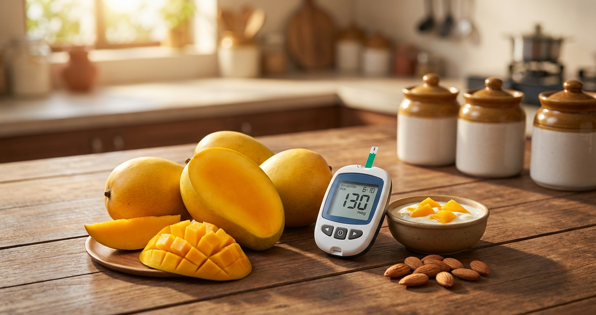

Can Diabetics Eat Mangoes? Complete Indian Guide — Varieties, Portions & Blood Sugar Impact (2026)

Short answer: Yes, diabetics can eat mangoes. In fact, a groundbreaking 2025 clinical study proved that daily mango consumption for 24 weeks improved blood glucose control and insulin sensitivity in prediabetic adults. But — and this is important — the variety, portion size, timing, and what you pair it with make all the difference between a healthy snack and a blood sugar disaster.
Every mango season, the same panic spreads: "Sugar patients can't eat mango." Your relatives will warn you. Your WhatsApp groups will share scary posts. Even some doctors give a blanket "avoid mangoes" instruction. The science says they're wrong — but you do need a smart strategy.
This guide covers everything Indian diabetics need to know about eating mangoes safely — with GI values for 8 popular Indian varieties, exact portion sizes, the best (and worst) times to eat, and a complete mango season meal plan.
📑 What's Inside
- What the Science Actually Says (2025 Research)
- GI Values for 8 Indian Mango Varieties
- Exact Portion Sizes for Diabetics
- Best & Worst Times to Eat Mango
- Smart Pairing Tricks to Reduce Blood Sugar Impact
- What to AVOID: Juice, Milkshake & Aamras
- Raw Mango: The Diabetic's Secret Weapon
- 7-Day Mango Season Meal Plan for Diabetics
- 5 Mango-Diabetes Myths Busted
- FAQs
1. What the Science Actually Says (2025 Research)
The outdated advice to completely avoid mangoes comes from a simplistic view: mangoes are sweet → sugar is bad → avoid mangoes. Modern nutrition science is far more nuanced.
A clinical trial funded by the National Mango Board studied adults with prediabetes who ate one mango daily for 24 weeks. Results compared to a control group eating a low-sugar granola bar:
- Fasting blood glucose: Improved significantly in the mango group
- Insulin sensitivity: Increased — meaning cells responded better to insulin
- Insulin resistance (HOMA-IR): Decreased in the mango group
- Body composition: Favorable changes despite the natural sugar
The mango group performed BETTER than the low-sugar snack group on every glycemic marker.
A separate study found that eating two cups of mango daily lowered insulin concentration and improved insulin sensitivity in overweight adults with chronic low-grade inflammation. The mechanism: mango polyphenols activated genes regulating antioxidant defense, which improved how cells process glucose.
Two Indian clinical studies tested whether replacing white bread at breakfast with 250 grams of Indian mango varieties (Alphonso, Kesar, Langda) affected glycemic control in Type 2 diabetics. Results after 12 weeks:
- Improved fasting blood sugar and HbA1c
- Better insulin sensitivity
- Reduced waist circumference and body weight
Key insight: Mango as a replacement for refined carbs — not as an addition — improved every metabolic marker.
Why Mangoes Aren't the Enemy
Mangoes contain several compounds that actively help with blood sugar management:
- Mangiferin — a powerful polyphenol unique to mangoes that has proven anti-diabetic effects, improving glucose uptake in cells
- Dietary fibre (1.6g per 100g) — slows sugar absorption in the gut
- Vitamin C (36mg per 100g) — reduces oxidative stress linked to insulin resistance
- Gallic acid & quercetin — antioxidants that protect pancreatic beta cells
2. Glycemic Index of 8 Popular Indian Mango Varieties
Not all mangoes are equal when it comes to blood sugar impact. Here's a comparison of the most popular Indian varieties:
| 🥭 Mango Variety | GI Range | GI Rating | Sugar per 100g | Best For Diabetics? |
|---|---|---|---|---|
| Kesar (Gujarat) | 40–55 | 🟢 Low–Medium | ~13g | ⭐ Excellent |
| Langda (UP/Bihar) | 48–55 | 🟢 Low–Medium | ~14g | ⭐ Very Good |
| Alphonso/Hapus (Maharashtra) | 51–58 | 🟡 Medium | ~15g | ✅ Good (in moderation) |
| Dasheri (UP) | 50–56 | 🟡 Medium | ~14.5g | ✅ Good |
| Himsagar (West Bengal) | 50–56 | 🟡 Medium | ~15g | ✅ Good |
| Chausa (UP) | 55–60 | 🟡 Medium | ~16g | ⚠️ Smaller portions |
| Totapuri (South India) | 55–62 | 🟡 Medium | ~16g | ⚠️ Smaller portions |
| Banganapalli (Andhra) | 56–65 | 🟡 Medium–High | ~17g | ⚠️ Limit to 80–100g |
| Raw/Unripe Mango (any variety) | 25–35 | 🟢 Low | ~5g | ⭐⭐ Best option |
For Comparison: GI of Common Indian Foods
Mango has a LOWER glycemic index than white rice, maida roti, and even watermelon — yet nobody panics about eating rice.
3. Exact Portion Sizes for Diabetics
Portion control is everything. Here's exactly how much mango you can eat based on your diabetes status:
| Diabetes Status | Safe Portion/Day | Carbs | Visual Guide |
|---|---|---|---|
| Prediabetic (HbA1c 5.7–6.4%) | 150g (1 small mango or ¾ medium) | ~22g | Size of a tennis ball |
| Type 2 — well-controlled (HbA1c <7%) | 100–150g (½ medium mango) | ~15–22g | Size of a cricket ball |
| Type 2 — poorly controlled (HbA1c >8%) | 80–100g (⅓ medium mango) | ~12–15g | Fits in your cupped palm |
| Type 1 (on insulin) | 100–150g (with carb counting) | ~15–22g | Count as 1–1.5 carb exchanges |
Eat mango INSTEAD of other carbs — not in addition to your regular meal. If you're having a mango serving, skip the rice/roti equivalent. One serving of mango (~150g) replaces approximately 1 roti or ½ cup cooked rice in carbohydrate value.
🥭 What 100g of Mango Looks Like
- Alphonso: About 2–3 large slices (half a medium fruit)
- Kesar: One whole small Kesar mango (they're naturally smaller)
- Langda: About half a medium Langda
- Dasheri: About one-third of a large Dasheri
Tip: Use a kitchen scale for the first week until you can eyeball portions accurately.
4. Best & Worst Times to Eat Mango
When you eat a mango matters almost as much as how much you eat. Your body's insulin sensitivity changes throughout the day.
| Timing | Rating | Why |
|---|---|---|
| Mid-morning snack (10–11 AM) | ⭐⭐⭐ Best | Insulin sensitivity is highest. 2–3 hours after breakfast gives your body time to process. |
| Mid-afternoon (3–4 PM) | ⭐⭐ Very Good | Good insulin sensitivity. Prevents evening junk food cravings. |
| With breakfast (as replacement) | ⭐⭐ Good | Works well if it replaces refined carbs (bread/cereal). The Fortis study used this approach. |
| Empty stomach (first thing AM) | ⚠️ Avoid | Fructose hits your liver without a food buffer. Can cause a sharper spike. |
| After dinner (8–10 PM) | 🚫 Worst | Insulin sensitivity is lowest at night. Sugar sits in your bloodstream longer. Disrupts sleep. |
| Late night dessert | 🚫 Worst | Raises overnight glucose. Morning fasting sugar will be elevated. |
5. Smart Pairing Tricks to Reduce Blood Sugar Impact
Eating mango alone on an empty stomach gives you the maximum blood sugar impact. Pairing it with protein, fat, or fibre dramatically slows glucose absorption.
Top 5 Diabetic-Friendly Mango Pairings
| Pairing | How It Helps | Recipe Idea |
|---|---|---|
| Mango + Dahi (Curd) | Protein + probiotics slow absorption. Curd has GI of 28. | 100g mango cubes in ½ cup plain dahi (no sugar) |
| Mango + Almonds/Walnuts | Healthy fats delay gastric emptying. 5–6 almonds reduce spike by ~20%. | Mango slices with a handful of roasted almonds |
| Mango + Paneer | High protein (18g/100g) creates a sustained energy release. | Mango-paneer salad with mint and lemon |
| Mango + Chia Seeds | Soluble fibre forms a gel that traps sugar. Slows absorption dramatically. | Mango chia pudding (soak chia overnight in almond milk, add mango) |
| Mango + Sprouts Salad | Fibre + plant protein combo. Filling and low-GI. | Moong sprouts + mango cubes + onion + lemon + chaat masala |
6. What to AVOID: Juice, Milkshake & Aamras
The mango itself isn't the problem. The form you consume it in makes all the difference.
| Form | Sugar Content | GI | Verdict |
|---|---|---|---|
| Fresh mango slices (100g) | ~15g | 51–56 | ✅ Safe — fibre intact |
| Mango smoothie (with dahi, no sugar) | ~18g | ~55 | ✅ OK — protein buffers |
| Aam panna (raw mango, no sugar) | ~8g | ~35 | ✅ Excellent — use raw mango |
| Mango juice (packaged, 250ml) | ~30–35g | 75+ | 🚫 Avoid — fibre stripped, sugar concentrated |
| Mango milkshake (with sugar) | ~45–50g | 80+ | 🚫 Dangerous — double sugar load |
| Aamras (sweetened puree) | ~35–40g | 70+ | 🚫 Avoid — pureed + added sugar |
| Mango ice cream | ~25–30g | 65+ | 🚫 Avoid — sugar + refined dairy |
| Mango pickle (aam ka achaar) | ~2–3g | ~15 | ✅ Fine — very low sugar, high sodium though |
7. Raw Mango: The Diabetic's Secret Weapon 🌟
Here's something most people don't know: raw (unripe/kaccha) mango is one of the BEST foods for diabetics.
- GI: 25–35 — lower than most vegetables
- Sugar: ~5g per 100g — one-third of ripe mango
- Rich in pectin fibre — slows glucose absorption
- High in vitamin C — reduces oxidative stress
- Organic acids (citric, malic) — may improve insulin sensitivity
Best Raw Mango Recipes for Diabetics
- Sugar-free Aam Panna: Boil raw mango, blend with roasted cumin, black salt, mint. Sweeten with stevia if needed. Perfect summer cooler with GI under 30.
- Raw Mango Dal: Add grated raw mango to your regular toor/moong dal. The sourness adds flavour and the low-GI mango improves the meal's overall glycemic load.
- Kacchi Kairi Salad: Julienned raw mango + onion + green chilli + coriander + roasted peanuts + lemon + chaat masala. High protein, low sugar, incredibly refreshing.
- Raw Mango Chutney: Raw mango + garlic + green chilli + salt + cumin. Zero sugar, amazing flavour, pairs with everything.
- Raw Mango Raita: Grated raw mango in fresh dahi with cumin and a pinch of salt. Protein + low-GI mango = perfect snack.
8. 7-Day Mango Season Meal Plan for Diabetics
Here's how to incorporate mangoes into a balanced diabetic diet without compromising blood sugar control. Each day includes one mango serving that replaces equivalent carbs.
| Day | Mango Serving (When) | How to Eat | What It Replaces |
|---|---|---|---|
| Monday | 10:30 AM snack | 100g Kesar slices + 6 almonds | Morning biscuits/namkeen |
| Tuesday | Breakfast (8 AM) | Mango-dahi bowl (100g mango + ½ cup dahi + chia seeds) | Bread/toast |
| Wednesday | 3:30 PM snack | Mango-paneer salad (100g mango + 50g paneer + mint) | Evening chai + biscuits |
| Thursday | Lunch side | Raw mango dal (kacchi kairi in toor dal) | No replacement needed — raw mango is very low sugar |
| Friday | 10:30 AM snack | 150g Alphonso slices + walnuts | Skip 1 roti at lunch |
| Saturday | Afternoon treat | Mango chia pudding (100g mango, overnight chia) | Afternoon sweets/mithai |
| Sunday | Breakfast | Moong sprout + mango chaat + roasted peanuts | Poori/paratha |
9. Five Mango-Diabetes Myths — Busted
✅ Truth: A 100g serving of mango has ~15g sugar. A 100g bar of Cadbury Dairy Milk has ~56g sugar. Mango also provides fibre, vitamins, and polyphenols that improve insulin sensitivity. Candy provides nothing.
✅ Truth: The 2025 Fortis C-DOC study proved that Type 2 diabetics who ate 250g mango daily (replacing bread) had BETTER HbA1c, fasting sugar, and insulin sensitivity after 12 weeks. Total avoidance is outdated advice.
✅ Truth: Mango has ~15g sugar per 100g. Grapes have ~16g, banana ~12g but much higher GI (62 vs 51), and chikoo/sapota has ~14g with a higher GI (55–70). Mango is middle-of-the-pack.
✅ Truth: NEVER skip your diabetes medication because of mango. Mango is food, not medicine. Continue all prescribed medications. If you're on insulin, count the mango carbs (15–22g per serving) and dose accordingly.
✅ Truth: Organic vs conventional has no impact on glycemic index or sugar content. The GI of an Alphonso is the same whether it's organic or not. Don't pay premium prices thinking organic mangoes are "safer" for diabetes.
10. Frequently Asked Questions
Can Type 1 diabetics eat mangoes?
Yes. Type 1 diabetics can eat mangoes by counting the carbohydrates and adjusting their insulin dose accordingly. 100g of mango = approximately 15g carbs = roughly 1 carb exchange. Work with your endocrinologist to determine your insulin-to-carb ratio for mango. Consider using a CGM to monitor the glucose response in real-time.
Can I eat mango during pregnancy with gestational diabetes?
In small portions (80–100g), yes — but only with your obstetrician's approval. Mango provides folate and vitamin A which are important during pregnancy. However, gestational diabetes requires stricter blood sugar control, so always test your 2-hour post-meal glucose after eating mango. If it exceeds your target, reduce the portion.
Is dried mango (aam papad) safe for diabetics?
No. Dried mango and aam papad concentrate the sugars dramatically — 100g of dried mango has ~60g sugar compared to ~15g in fresh mango. The GI also jumps to 70+. Additionally, most commercial aam papad contains added sugar, making it even worse. Stick to fresh fruit only.
Can I eat mango if I'm on metformin?
Yes. There's no interaction between mangoes and metformin. In fact, the fibre in mango may complement metformin's action by slowing carbohydrate absorption. Take your metformin as usual and enjoy mango in recommended portions.
How do I know if a mango is too ripe for diabetics?
If the mango is very soft, has wrinkled skin, smells intensely sweet, or the flesh is mushy/stringy — it's overripe and will have a higher GI. Choose mangoes that are fragrant and slightly firm, yielding to gentle pressure but not squishy. The flesh should hold its shape when cut.
Can I eat mango every day during mango season?
If your blood sugar is well-controlled (HbA1c under 7%), you can have a measured portion of mango daily during season — the clinical studies used daily mango for up to 24 weeks with positive results. Track your 2-hour post-mango glucose for the first 3–5 days. If consistently under 180 mg/dL, daily consumption in recommended portions is fine.
🥭 Track How Mangoes Affect YOUR Blood Sugar
Everyone's glucose response is different. Use Health Gheware's AI-powered diabetes tracker to log your mango intake and see exactly how different varieties and portions affect your blood sugar.
Try Free — No Credit Card Needed →The Bottom Line
Mangoes are not the enemy of diabetes. In fact, 2025 clinical research proves they can improve blood sugar control when eaten smartly. The key principles:
- Portion control: 100–150g per day, not an entire mango sitting in front of the TV
- Replace, don't add: Swap mango for other carbs (rice, roti, bread)
- Pair smart: Always eat with protein or fat (dahi, nuts, paneer)
- Time it right: Mid-morning or afternoon — never late night
- Choose wisely: Kesar and Langda are best; slightly firm over mushy-ripe
- Track and adjust: Your glucometer is the final judge — monitor and personalize
This mango season, don't deprive yourself. Eat mangoes with knowledge, not fear. 🥭
Disclaimer: This article is for informational purposes. Always consult your doctor or endocrinologist before making dietary changes, especially if you're on insulin or multiple diabetes medications.